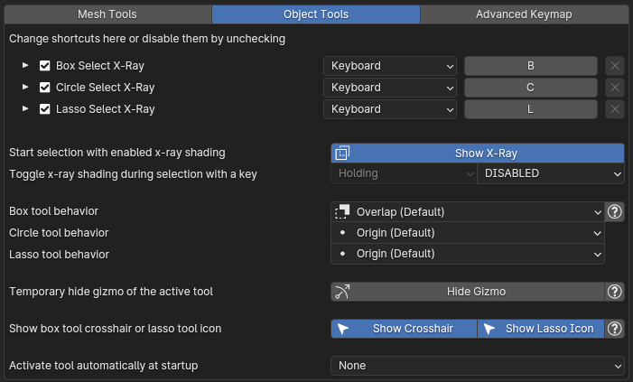
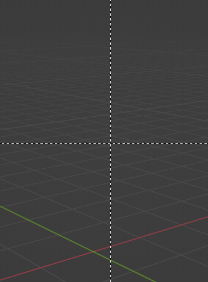

Shortcuts
Shortcuts for tools in object mode.
Show x-ray shading
This toggle defines whether the x-ray tools will use x-ray shading or not. The button below allows you to toggle the state of x-ray shading.
For example, you can turn off x-ray shading and x-ray tools will work just like the default blender tools and set a key to turn it on when it's needed:
Selection behavior
- In Origin mode you select only objects with origins within the selection region.
- In Contain mode you select only objects entirely enclosed in the selection region:
- In Overlap mode you select all objects within the selection region, plus any objects crossing boundaries of the selection region:
- In Direction mode you automatically switch between Overlap and Contain selection based on cursor movement direction.
- Drag from left to right to select all objects crossing or within the selection region (Overlap).
- Drag from right to left to select all objects entirely enclosed in the selection region (Contain).
Note that every mode is slower than the default one on objects with a lot of geometry.
Hide gizmo of active tool
Hide gizmo of the active tool (such as the scale gizmo) for the duration of the selection and restore it after finishing selection.
Show box crosshair or lasso icon
When you initialize a tool with a keyboard shortcut (for example default B, C, L shortcuts) it displays a starting indicator - crosshair for box tool and lasso icon for lasso tool:
 
This toggles can disable them.
Activate tool at startup
The tool specified in this option will be set as active in the toolbar automatically when you start blender or load a save file.